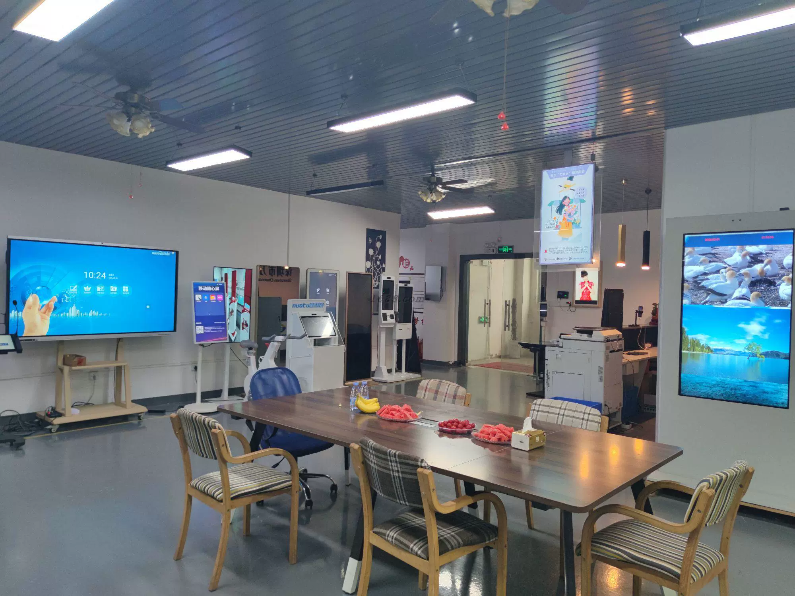

餐饮与快餐连锁
自助点餐、菜单展示和缩短排队时间的服务终端，适用于连锁门店、食堂和美食广场。
面向项目采购
自助终端项目的屏幕尺寸、系统、打印机、扫码器、支付设备位置、外观品牌、语言和安装环境都会影响最终结构。我们从您的项目需求出发，与工厂确认适合的硬件配置。
核心产品系列
选择产品方向后，可按应用、配置和目标市场进行定制。
行业解决方案
我们协助 B2B 客户在报价前明确设备形态、安装方式和外设配置。
自助点餐、菜单展示和缩短排队时间的服务终端，适用于连锁门店、食堂和美食广场。
围绕扫码、支付、称重/置物流程设计的自助收银、价格查询和零售显示设备。
面向本地经销、软件集成和批量落地项目的 OEM 自助终端硬件。
适用于导览、访客登记、信息查询和数字标牌的互动终端解决方案。
应用场景、参考图、屏幕尺寸、系统、所需模块、目标市场和预计数量。
核对机柜结构、外设、品牌工艺、包装和适合的配置。
常规定制样品周期通常为 10–15 天，具体以配置确认后为准。
样品确认后，按生产、出口包装和发运文件要求推进批量项目。

工厂与品质
ONEMARK 在中国深圳制造商用显示与自助终端硬件。ISO 管理流程覆盖物料、组装、功能检查、老化测试和出口包装。